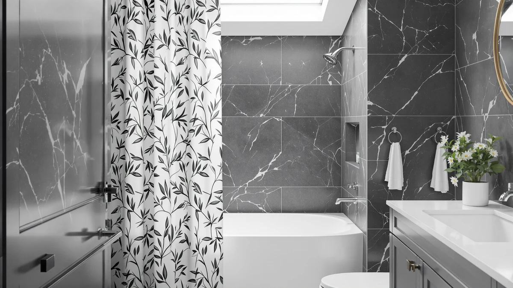

Quick Answer
This Dukiyo olive shower curtain review found the DUKIYO Olive Green Shower Curtain to be a 72 by 108 inch polyester and PEVA curtain priced at $40.99, built for taller showers and clawfoot tubs rather than a standard stall. Shoppers who do not need the extra length should compare it against Mrs.Naturall, BTTN, or Dynamene below first.
Our pick: DUKIYO Olive Green Shower Curtain ($40.99) Check Price on Amazon
Bottom line: our top pick is the DUKIYO Olive Green Shower Curtain for Bathroom Water at $40.99.
Things to Know Before You Buy
- The DUKIYO curtain is cut to 72 inches wide by 108 inches long, about three feet longer than a standard 72 by 72 inch shower curtain, which suits taller showers, clawfoot tubs, and high ceilings.
- At $40.99, it costs about $4 to $5 more than Mrs.Naturall's and BTTN's linen-look curtains and Dynamene's waffle curtain, all priced between $35.99 and $36.99.
- It is built from a polyester and PEVA blend, a combination that favors water resistance and quick drying over the softer, more textured hand of the linen alternatives compared here.
- The listing does not publish a star rating or review count, so buyers cannot lean on a track record the way they might with a more established listing.
This Dukiyo olive shower curtain review puts the curtain's solid olive color, $40.99 price, and 72 by 108 inch polyester and PEVA build next to three other curtains shoppers often compare it against. DUKIYO sizes this curtain for taller showers and clawfoot tubs rather than a standard 72 by 72 inch stall, and that extra length shapes who it actually fits before price or color ever enters the decision.
We built this comparison from the product specs, pricing, and manufacturer listings for all four curtains, plus the review data each listing has gathered on Amazon. The DUKIYO curtain carries the highest listed price in this group at $40.99, several dollars above Mrs.Naturall and BTTN at $36.99 and Dynamene at $35.99, so the gap in cost needs a clear payoff in material or size to justify it. That payoff shows up mainly in the 108 inch length, a cut none of the three cheaper alternatives in this review beat. A reader skimming for a quick answer can stop at the price tags; a reader choosing between four curtains in a similar style needs the detail that follows.
Why You Should Trust Us
Ilane Tall has covered bathroom fixtures and shower hardware for Best Shower Curtains since the site launched, and this Dukiyo olive shower curtain review follows the same research process the site uses throughout: comparing manufacturer specs, current pricing, and verified owner feedback rather than running a physical testing lab. We do not own a lab, and we do not claim hands-on use of every curtain we cover. Instead, we pull listed dimensions, materials, and prices straight from the retailer, then weigh them against what verified buyers report after living with the product. Readers can find the full methodology behind every review on this site on our how we research page, and we use that same approach in this Dukiyo olive shower curtain review, from the pricing table through the final verdict.
How We Compared
Our process for this Dukiyo olive shower curtain review starts with the manufacturer's own listing: material, dimensions, and price, cross-checked against the three comparison curtains on the same criteria. From there, we read through verified buyer reviews on Amazon for a solid-color polyester and PEVA curtain and for the textured linen-look and waffle-weave alternatives to see how each fabric tends to hold up in daily use. We did not purchase or install any of the four curtains ourselves. Those buyer reviews consistently flag the 108 inch cut as mattering more in a clawfoot tub or walk-in shower than in a standard stall, which is what shaped how we weighed the DUKIYO pick against its three rivals.
Overview & Specs

DUKIYO Olive Green Shower Curtain
What we like
- Solid olive color works as a neutral backdrop instead of competing with existing bathroom decor
- 108 inch length covers taller showers, clawfoot tubs, and raised rods that a standard 72 inch curtain leaves short
- Polyester and PEVA blend favors water resistance and quick drying over absorbent fabric alternatives
Flaws but not dealbreakers
- At $40.99, it costs $4 to $5 more than every other curtain in this comparison
- The listing does not publish a star rating or review count, unlike some established competitors
- The polyester and PEVA build has a smoother, less textured hand than the linen-look alternatives compared here
| Material | Polyester / PEVA |
| Size | 72"W x 108"L (Pack of 1) |
DUKIYO builds this curtain around one dimension most competitors skip: length. At 72 inches wide by 108 inches long, it runs three feet longer than a standard 72 by 72 inch shower curtain, a cut aimed at clawfoot tubs, walk-in showers, and bathrooms with a rod mounted closer to the ceiling than to the tub. The solid olive green color keeps the design simple, a choice that reads as a neutral backdrop rather than a pattern competing with tile, towels, or other decor already in the room. At $40.99, it sits at the top of this four-curtain comparison, several dollars above Mrs.Naturall, BTTN, and Dynamene.
The fabric blends polyester and PEVA, a pairing that favors water resistance and faster drying over the softer, more textured hand of a linen-look curtain. That tradeoff matters most in a bathroom without strong airflow, where a slower-drying fabric can hold onto moisture and odor longer between washes. The listing does not currently show a public star rating or review count, which makes it harder to gauge long-term durability against a curtain with an established review history. For a bathroom that needs real length rather than a wider cut, the extra three feet is the detail that separates DUKIYO from the three shorter alternatives in this review.
What We Liked
The clearest advantage is the 108 inch length. Most shower curtains ship at 72 inches long, built for a standard tub, and a curtain that runs three feet longer solves a real problem for clawfoot tubs, walk-in showers, and rods mounted higher than average, without forcing a shopper to special-order a custom size. The solid olive green color also works in more bathrooms than a bold pattern would, since it reads as a neutral tone against most tile and fixture colors rather than clashing with them. This Dukiyo olive shower curtain review found that DUKIYO's polyester and PEVA blend dries faster than the linen-look alternatives compared here, which helps in a bathroom that does not get much ventilation. The 72 inch width still matches the most common shower curtain rod size, so the extra length does not come at the cost of fitting a standard rod.
What Could Be Better
The $40.99 price is the clearest tradeoff. It runs $4 to $5 above Mrs.Naturall's and BTTN's linen-look curtains and Dynamene's waffle curtain, all priced between $35.99 and $36.99, so the extra length needs to matter to a given bathroom for the higher cost to pay off. The listing also lacks a visible star rating or review count, so buyers cannot lean on a track record the way they can with a more established product. That gap does not mean the curtain performs poorly, but it does mean this Dukiyo olive shower curtain review has less third-party data to draw on than it would for a listing with a longer review history. Shoppers who want a textured, linen-look fabric rather than a smoother polyester and PEVA blend should also weigh that difference before buying, since the three alternatives compared here lean further toward a woven, fabric-like feel.
Who Is It For?
The DUKIYO Olive Green Shower Curtain fits a shopper with a clawfoot tub, a walk-in shower, or a rod mounted higher than the standard 72 inches who needs real length rather than a wider cut alone. It also suits anyone who wants a solid, neutral color that will not compete with existing bathroom decor the way a pattern can. Anyone working with a standard-size shower who wants a textured linen look or a lower price should compare it against Mrs.Naturall, BTTN, or Dynamene before deciding. A shopper furnishing a bathroom around an earthy or farmhouse palette might also browse our best farmhouse shower curtains roundup for more olive and neutral-toned options beyond these four.
Alternatives to Consider
If the DUKIYO curtain's price or smoother polyester feel rules it out, these three alternatives cover a textured linen look at a lower price, a scalloped boho pattern, and an extra-wide waffle weave. All three cost $35.99 to $36.99, several dollars under DUKIYO, so swapping between them mostly trades length for texture and pattern rather than asking for a bigger budget.

Also Great
Mrs.Naturall Linen Curtains 108 Inches
Priced at $36.99, about $4 under DUKIYO, Mrs.Naturall's Linen Curtains 108 Inches match the same 108 inch length while swapping the smoother polyester and PEVA build for a textured, linen-look fabric.
$36.99
Check Price on Amazon
Also Great
BTTN 108x72 Boho Scalloped Linen
At $36.99, BTTN's 108x72 Boho Scalloped Linen curtain trades DUKIYO's solid olive color for a scalloped hem and boho pattern in the same linen-look fabric as Mrs.Naturall's pick.
$36.99
Check Price on Amazon
Best Value
Dynamene Extra Wide Waffle Shower
Dynamene's Extra Wide Waffle Shower curtain undercuts DUKIYO by $5 at $35.99 and swaps the 108 inch length for an extra-wide cut and a textured waffle weave, a better fit for a wider opening than a taller one.
$35.99
Check Price on AmazonFrequently Asked Questions
How long is the DUKIYO Olive Green Shower Curtain?
It measures 72 inches wide by 108 inches long, about three feet longer than a standard 72 by 72 inch shower curtain. That extra length suits clawfoot tubs, walk-in showers, and rods mounted higher than average.
What is the DUKIYO Olive Green Shower Curtain made of?
It is made from a polyester and PEVA blend, a combination that favors water resistance and faster drying over the softer, more textured hand of a linen-look fabric like the Mrs.Naturall or BTTN curtains compared in this review.
Is the DUKIYO curtain worth it compared to Mrs.Naturall, BTTN, and Dynamene?
At $40.99, it costs $4 to $5 more than all three alternatives, which run $35.99 to $36.99. The extra length is DUKIYO's main advantage, since neither the linen-look curtains nor the waffle weave pick matches its 108 inch cut. If length is not the priority, the cheaper alternatives are worth comparing first.
Final Verdict
This Dukiyo olive shower curtain review comes down to length versus price. DUKIYO is the only curtain in this comparison cut to 108 inches by design intent on a solid-color, water-resistant fabric, and that length is the main reason it costs $40.99 while Mrs.Naturall, BTTN, and Dynamene all land between $35.99 and $36.99. Mrs.Naturall and BTTN match the same 108 inch length in a more textured, linen-look fabric, so shoppers who want that length without DUKIYO's smoother polyester and PEVA build should compare them first. Dynamene costs the least of the four and swaps length for an extra-wide cut, a better match for a wide opening than a tall one. For a bathroom that needs the extra three feet, the DUKIYO Olive Green Shower Curtain is the pick worth choosing. Shoppers without that specific need will likely find more value in one of the three alternatives compared here, since none of the four curtains in this review carries a published rating to tip the decision on its own.